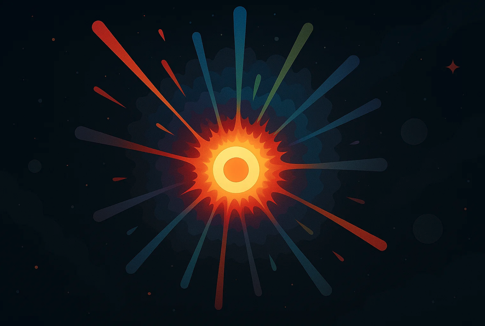

Trillions of miles away, an unbound explosion that’s billions of degrees Celsius expands at more than 20 million miles per hour, obliterating anything in its path. Mercy is a non-existent term; it only knows destruction. Several weeks to a few months can go by without clemency. Any living organism within 25–50 light-years of this hell-like event evaporates from existence and memory. The demonic cataclysm I just described is the universe’s recycling program, spreading atoms across the cosmos that will eventually become planets, comets, black holes, and even you.
The atoms that make up your body didn’t just appear out of thin air; they were formed in the scorchingly dense cores of stars all over the universe. Particles from all over the cosmos, birthed from stars, traveled billions and trillions of miles to reach this Earth to eventually become you. But how… how can it be that stars are the reproducers, the ones who form the atoms that give rise to you? What is the science behind it? I’ll tell you, but we have to go back, back to when the star that birthed you was born billions of years ago.
At the beginning of a star's life, it is mainly composed of hydrogen atoms. But because their cores have such high densities, those atoms fuse, creating heavier helium atoms. This process continues, going down the line, starting from hydrogen and going all the way to iron. Once it reaches that critical point and has burned as much as it can, the energy released from nuclear fusion, which prevents the star from collapsing, ceases, and the star implodes.
All the matter that was contained within the star is distributed across the cosmos, reaching its farthest points. It’s not just iron that is ejected, but all the elements from hydrogen up to iron. While there might be more of the heavier elements, almost all of them remain within the star until the supernova explosion.
The elements stars spew out are what we are made of. Carbon, oxygen, nitrogen, iron, and calcium all play vital roles in our bodies. Oxygen, for example, makes up 65 percent of our entire body; carbon is 18.5 percent, hydrogen is 9.5 percent, and nitrogen is 3.3 percent. We are, by definition, stardust. The largest celestial bodies in the universe are made of nearly identical elements to us. That is, in my opinion, absolutely incredible.
It’s not just us, though; our very own solar system was made of stardust. About 4.6 billion years ago, a vast, rotating cloud of gas and dust eventually formed into the Sun, eight planets, moons, comets, asteroids, and meteors. The matter that makes these things up will one day clump back together, birth a new star, and repeat the cycle once more.